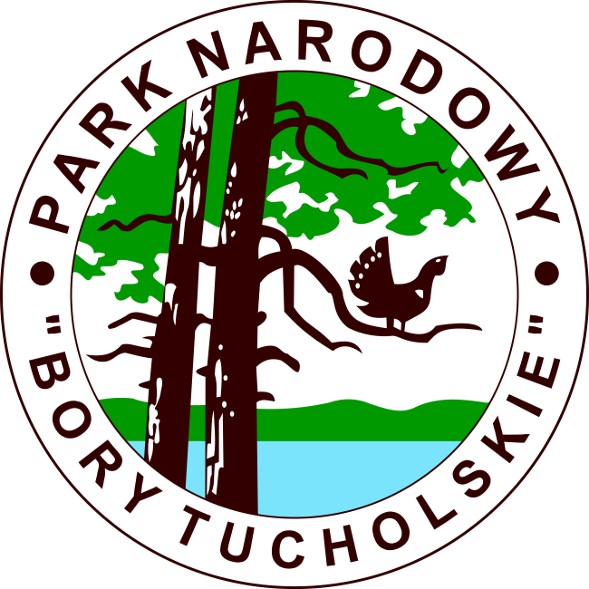
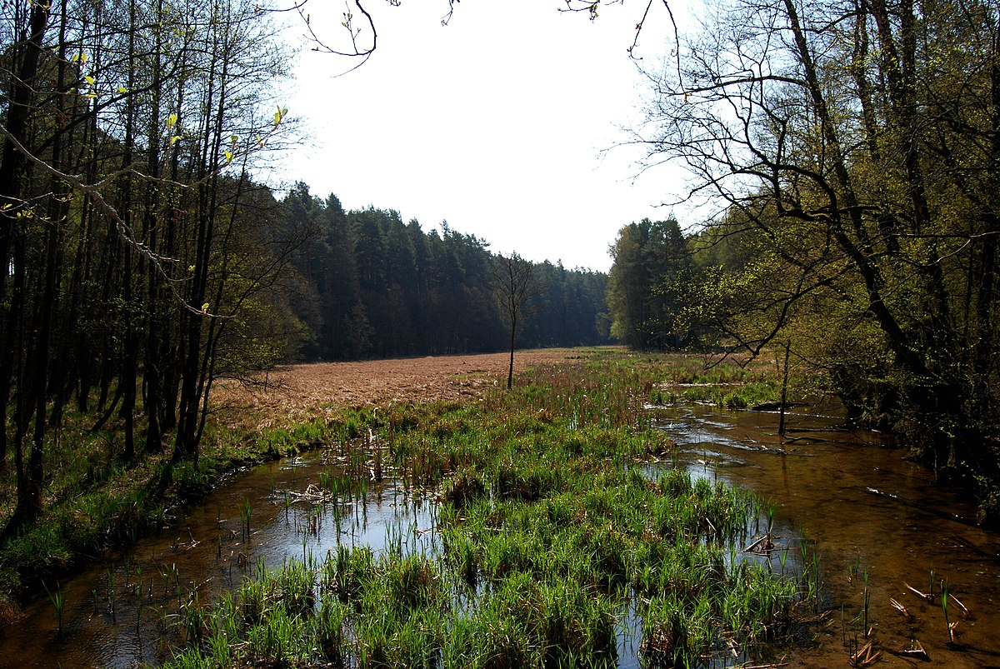
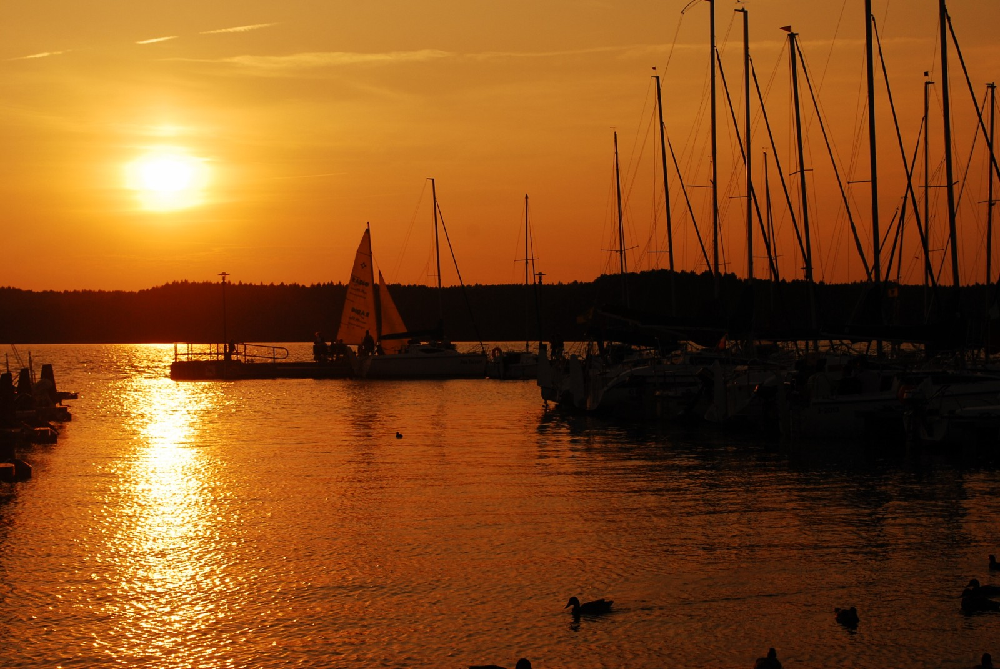

Dane o powiecie

| Siedziba | Chojnice |
| Powierzchnia | 1364 km² |
| Populacja | 96 697 |
Dane kontaktowe starostwa powiatowego
| Telefon | +48 52 39 66 501 |
| Adres | ul. 31 Stycznia 56 89-600 Chojnice |
| Strona | powiat.chojnice.pl |
Atrakcje turystyczne
Park Narodowy Bory Tucholskie
Park Narodowy „Bory Tucholskie” – jeden z 23 parków narodowych na terenie Polski i 11 na nizinach. Wody zajmują 11,5% powierzchni parku. W jego obrębie znajduje się 21 jezior, z których największe i najgłębsze to Jezioro Ostrowite (272 ha). Siedem z nich jest ze sobą połączone i tworzy ciąg nazwany Strugą Siedmiu Jezior, stanowiący niewielką rzekę o długości 13,9 km
Źródło: wikipedia.orgTucholski Park Krajobrazowy
Otoczenie przyrody, czyste powietrze, wyśmienite warunki do aktywnej rekreacji i cenne walory krajoznawcze stwarzają warunki idealne do wypoczynku. Dlatego właśnie bezkresne lasy przecięte wartkim nurtem Brdy, sielskie krajobrazy i malownicze wsie borowiackie od lat przyciągają turystów w rejon Borów Tucholskich.
Źródło: kujawsko-pomorskie.travelJezioro Charzykowskie
Jezioro Charzykowskie to wypełniona wodą długa rynna wyżłobiona przez lodowiec o powierzchni ponad 1300 hektarów i głębokości do 30 metrów. Położone jest w Borach Tucholskich, w pobliżu granicy parku narodowego, a jednocześnie na terenie Zaborskiego Parku Krajobrazowego. Z racji samego położenia jest to miejsce o szczególnych walorach przyrodniczo-krajobrazowych.
Zródło: pomorskie.travel.pl